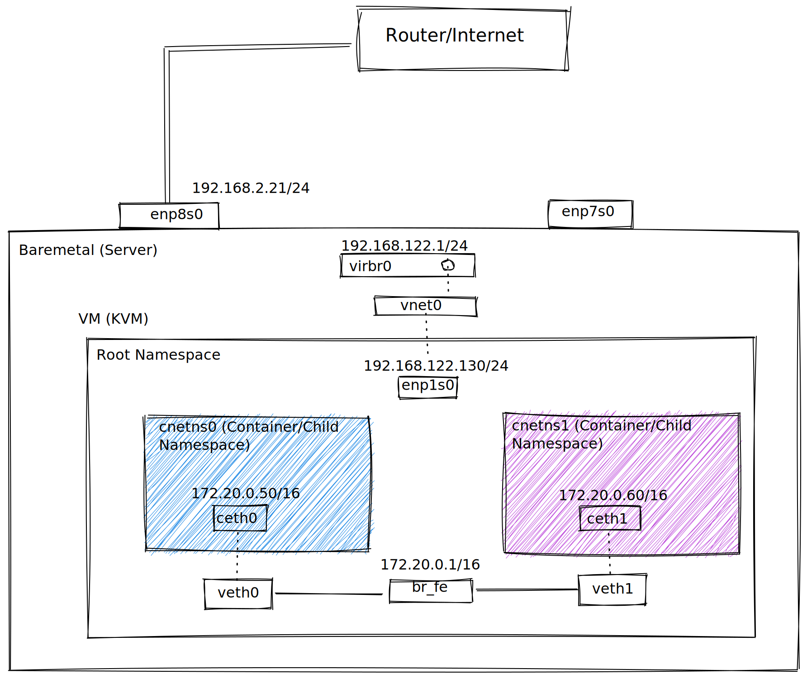

Selinux commands individually ran takes time, so should/can be batched wherever possible.
[root@rhce5 data]# semanage -i -<<_EOF port -a -t http_port_t -p tcp 81 fcontext -a -t httpd_sys_content_t "/shared(/.*)?" _EOF
Contexts can be changed to permissive mode temporarily for troubleshooting purposes to see if selinux is preventing the services to fail. All these similar customizations can be checked/found under 'customizations'
[root@rhce5 data]# semanage output -o - .. port -a -t http_port_t -p tcp 81 fcontext -a -f a -t httpd_sys_content_t '/shared(/.*)?' -Examples. [root@rhce5 data]# semanage fcontext -lC SELinux fcontext type Context /shared(/.*)? all files system_u:object_r:httpd_sys_content_t:s0 [root@rhce5 data]# semanage permissive -a httpd_t [root@rhce5 data]# semanage permissive --list Customized Permissive Types httpd_t Builtin Permissive Types
Sesearch can be used to check the selinux policies, for eg. checking a rule and how the transition works is as below.
[root@rhce5 data]# sesearch -T -s initrc_t -t httpd_exec_t
Found 1 semantic te rules:
type_transition initrc_t httpd_exec_t : process httpd_t;
[root@server1 ~]# sesearch --allow --source httpd_t --target httpd_sys_content_t --class dir
Found 16 semantic av rules:
allow httpd_t httpd_sys_content_t : dir { ioctl read getattr lock search open } ;
ausearch can be used to dig into the logs. Prior to checking logs, install and run setroubleshootd
#Start setroubleshoot daemon. setroubleshootd #ausearch options ausearch -x httpd ausearch -m avc --start today #Run sealert obtained from the audit.log to obtain additional information on the alert. [root@lab125a ~]# sealert -l cd9b7da6-cb08-43ae-81e0-dbd7dd928036 SELinux is preventing /usr/sbin/sshd from name_connect access on the tcp_socket port 113.
Majority of docs/man pages for selinux has to be installed/configured manually, which can be done via sepolicy
yum install selinux-policy-devel -y sepolicy manpage -a -p /usr/share/man/man8 mandb man httpd_selinux yum install -y httpd-manual man -k _selinux
Mapping linux logins to selinux users.
#Adding a user
[root@server bin]# semanage login -a -s user_u user4
[root@server bin]# semanage login -l
Login Name SELinux User MLS/MCS Range Service
__default__ unconfined_u s0-s0:c0.c1023 *
root unconfined_u s0-s0:c0.c1023 *
system_u system_u s0-s0:c0.c1023 *
user4 user_u s0 *
user5 staff_u s0-s0:c0.c1023 *
#change default selinux login context
[root@server bin]# semanage login -m -S targeted -s staff_u __default__
[root@server bin]# semanage login -l
Login Name SELinux User MLS/MCS Range Service
__default__ staff_u s0-s0:c0.c1023 *
root unconfined_u s0-s0:c0.c1023 *
system_u system_u s0-s0:c0.c1023 *
user4 user_u s0 *
user5 staff_u s0-s0:c0.c1023 *
[root@server bin]# semanage login -m -S targeted -r s0:c0 -s staff_u __default__
[root@server bin]# semanage login -l
Login Name SELinux User MLS/MCS Range Service$
se$
__default__ staff_u s0:c0 *
root unconfined_u s0-s0:c0.c1023 *
system_u system_u s0-s0:c0.c1023 *
user4 user_u s0 *
user5 staff_u s0-s0:c0.c1023 *
--Quick Reference
https://wiki.centos.org/HowTos/SELinux
https://wiki.gentoo.org/wiki/SELinux/Users_and_logins
--Add User/login example.
semanage user --add -r s0:c0 -R "auditadm_r sysadm_r" auditor_u
semanage login --add -s auditor_u phil
semanage fcontext, port and boolean examples.
--Add persistent context for a file
[root@server ~]# semanage fcontext -a -S targeted -s user_u -t public_content_t /root/afile
[root@server ~]# cat /etc/selinux/targeted/contexts/files/file_contexts.local | grep afile
/root/afile user_u:object_r:public_content_t:s0
[root@server ~]# ls -Zd /root/
dr-xr-x---. root root system_u:object_r:admin_home_t:s0 /root/
[root@server ~]# chcon -u user_u -t var_run_t /root
[root@server ~]# ls -Zd /root/
dr-xr-x---. root root user_u:object_r:var_run_t:s0 /root/
[root@server ~]# restorecon -Fv /root/
restorecon reset /root context user_u:object_r:var_run_t:s0->system_u:object_r:admin_home_t:s0
[root@server ~]# ls -Zd /root/
dr-xr-x---. root root system_u:object_r:admin_home_t:s0 /root/
-Add port
[root@server ~]# semanage port -a -t http_port_t -p tcp 8010
[root@server ~]# semanage port -l |grep http_port_t
http_port_t tcp 8010, 80, 81, 443, 488, 8008, 8009, 8443, 9000
pegasus_http_port_t tcp 5988
-Delete port
[root@server ~]# semanage port -d -t http_Port_t -p tcp 8010
[root@server ~]# semanage port -l |grep http_port_t
http_port_t tcp 80, 81, 443, 488, 8008, 8009, 8443, 9000
pegasus_http_port_t tcp 5988
-Check the context to permissive to see if selinux is the root case of a problem.
[root@server phil]# semanage permissive -a httpd_t
[root@server phil]# seinfo --permissive
Permissive Types: 7
httpd_t
blkmapd_t
hsqldb_t
ipmievd_t
sanlk_resetd_t
systemd_hwdb_t
targetd_t
#Triaging a SEALERT
-Error message.
type=AVC msg=audit(1218128130.653:334): avc: denied { connectto } for pid=9111 comm="smtpd" path="/var/spool/postfix/postgrey/socket"
scontext=system_u:system_r:postfix_smtpd_t:s0 tcontext=system_u:system_r:initrc_t:s0 tclass=unix_stream_socket
--Check the scontext, which is postfix_smtpd_t
semanage permissive -a postfix_smtpd_t
Watch the audit logs to see what postfix_smtpd_t needs to be allowed to do in order to succesfully operate. Once we're finished we can put that type back into enforcing mode:
--Allow apache to listen on port 81
semanage port -a -t http_port_t -p tcp 81
semanage permissive -d postfix_smtpd_t
This approach doesn't suffer from the heavy-handedness of setenforce 0 and allows all other services on the system to keep benefiting from the access controls of SELinux.
[root@server1 html]# chcon -t var_t index.html
[root@server1 html]# ls -lZ index.html
-rw-r--r--. root root unconfined_u:object_r:var_t:s0 index.html
[root@server1 ~]# curl -s http://localhost/index.html
..
You don't have permission to access /index.html
..
-In audit log
type=AVC msg=audit(1508807842.331:542): avc: denied { getattr } for pid=4270 comm="httpd" path="/var/www/html/index.html" dev="dm-0" ino=137566
scontext=system_u:system_r:httpd_t:s0 tcontext=unconfined_u:object_r:var_t:s0 tclass=file
type=SYSCALL msg=audit(1508807842.331:542): arch=c000003e syscall=6 success=no exit=-13
a0=7fc5ba752c08 a1=7ffffad80a30 a2=7ffffad80a30 a3=ffffffe0 items=0 ppid=4266 pid=4270 auid=4294967295 uid=48 gid=48 euid=48
suid=48 fsuid=48 egid=48 sgid=48 fsgid=48 tty=(none) ses=4294967295 comm="httpd" exe="/usr/sbin/httpd" subj=system_u:system_r:httpd_t:s0 key=(null)
-Temporarily reset to permissive for triaging
[root@server1 ~]# semanage permissive -a httpd_t
[root@server1 ~]# semanage permissive -l
Customized Permissive Types
httpd_t
Builtin Permissive Types
sanlk_resetd_t
hsqldb_t
systemd_hwdb_t
blkmapd_t
ipmievd_t
targetd_t
#Sample selinux alerting.
[root@server1 ~]# curl -s http://localhost/index.html
Hello this is from server1.intercloudzone.com
#Scan the audit.log
sealert -a /var/log/audit/audit.log
...
If you want to fix the label.
/var/www/html/index.html default label should be httpd_sys_content_t.
Then you can run restorecon.
Do
# /sbin/restorecon -v /var/www/html/index.html
...
[root@server1 html]# restorecon -vR index.html
restorecon reset /var/www/html/index.html context unconfined_u:object_r:var_t:s0->unconfined_u:object_r:httpd_sys_content_t:s0
#Another way to verify.
[root@server1 ~]# matchpathcon -V /www/html/index.html
/www/html/index.html verified.
[root@server1 ~]# ausearch -m avc -c httpd
time->Tue Oct 24 17:35:24 2017
type=SYSCALL msg=audit(1508884524.050:482): arch=c000003e syscall=6 success=no exit=-13 a0=7f248c01fbf0 a1=7ffd21904f00 a2=7ffd21904f00 a3=7ffd21904c80 items=0 ppid=3385 pid=3391 auid=4294967295 uid=48 gid=48 euid=48 suid=48 fsuid=48 egid=48 sgid=48 fsgid=48 tty=(none) ses=4294967295 comm="httpd" exe="/usr/sbin/httpd" subj=system_u:system_r:httpd_t:s0 key=(null)
type=AVC msg=audit(1508884524.050:482): avc: denied { getattr } for pid=3391 comm="httpd" path="/www/html/index.html" dev="dm-0" ino=136145 scontext=system_u:system_r:httpd_t:s0 tcontext=unconfined_u:object_r:default_t:s0 tclass=file
NFS Mounts won't explort the selinux contexts unless explicity enabled.
#Install and configure docs. sepolicy manpage -a -p /usr/share/man/man8 mandb #Install essential packages yum install setroubleshoot-server policycoreutils-python libselinux-utils selinux-policy-devel setools-console #By default the NFS mounts has nfs_t if selinux is not used in the mount but can be explicitly used. mount -o context="system_u:object_r:public_content_rw_t:s0" server:/myshare /mnt/nfsexport #To explicity export the SELinux context, the NFS version 4.2 should be explicity turned on in /etc/sysconfig/nfs RPCNFSDARGS="-V 4.2" mount -o v4.2 must be specified as mount option. mount -o sec=krb5p,v4.2 server:/myshare /mnt/nfsexport